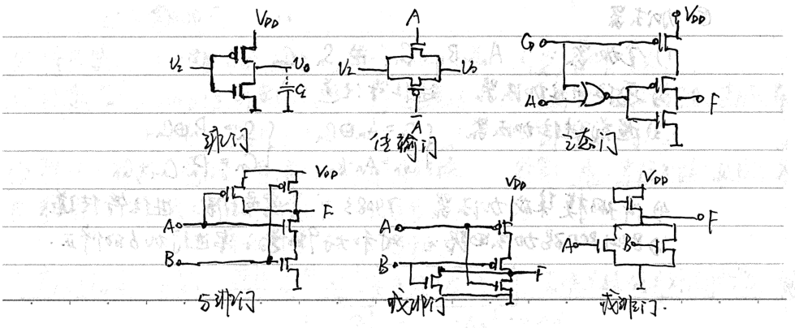
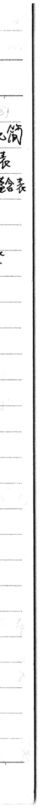
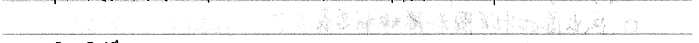
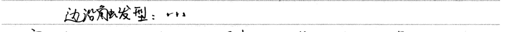
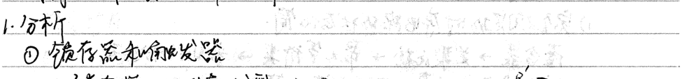
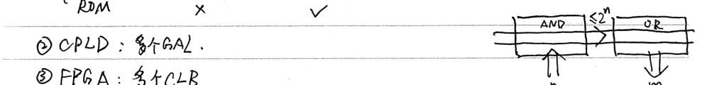
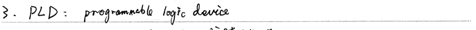
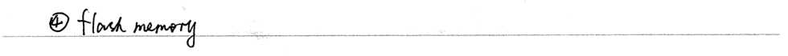
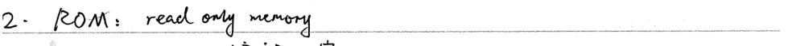

No. Date.


### Logic Gates and Encoding
#### Logic Gates: - **TTL Gates:** - **2-input AND Gate:** $$ A \cdot B = F $$ - **2-input OR Gate:** $$ A + B = F $$ - **2-input NAND Gate:** $$ \overline{A \cdot B} = F $$ - **2-input NOR Gate:** $$ \overline{A + B} = F $$ - **2-input XOR Gate:** $$ A \oplus B = F $$ - **2-input XNOR Gate:** $$ A \otimes B = F $$
#### CMOS Gates: - **2-input AND Gate:** $$ A \cdot B = F $$ - **2-input OR Gate:** $$ A + B = F $$ - **2-input NAND Gate:** $$ \overline{A \cdot B} = F $$ - **2-input NOR Gate:** $$ \overline{A + B} = F $$ - **2-input XOR Gate:** $$ A \oplus B = F $$ - **2-input XNOR Gate:** $$ A \otimes B = F $$



### IV. Combination Circuit Analysis and Design
1. **Analysis**
- **① Encoders and Priority Encoders** - 1) Binary Encoders: \( n \rightarrow 2^n \) - 2) Priority Encoders: \( 2^n \rightarrow n \). Not completely determined. - 3) Medium-Scale Integrated Encoders: 74148. Capacity expansion: \( (8-3) \times 2 \rightarrow (16-4) \)
- **② Decoders** - 1) Binary Decoders: \( n \rightarrow 2^n \) - 2) Medium-Scale Integrated Decoders: 74139(54). Capacity expansion: Not specified. - 3) Digital Display Decoders: Not specified.
- **③ Multiplexers and Demultiplexers** - 1) Multiplexer: Select data source by address code. - 2) Medium-Scale Integrated Multiplexer: 74153. Capacity expansion: Not specified. - 3) Demultiplexer: Select data source by address code.
- **④ Comparator** - 1) Binary Comparator: \( A > B \) = \( AB \), \( A < B \) = \( \overline{A}B \), \( A = B \) = \( \overline{A} \overline{B} \) - 2) Binary Comparator: Not specified. - 3) Medium-Scale Integrated Comparator: 7485. Capacity expansion: Not specified.
- **⑤ Adders** - 1) Full Adder: \( A_n, B_n, C_{n-1} \rightarrow S_n, C_n \) - 2) Ripple-Carry Adder: Propagate carry. - 3) Look-Ahead Carry Adder: \( P_n = A_n \oplus B_n \), \( S_n = P_n \oplus C_{n-1} \), \( C_n = P_n \cdot C_{n-1} + G_n \)
- **⑥ 8421 BCD Code Adder Circuit**: Not specified. Needs correction.
### Design - **Truth Table** -> **Simplified Logic Expression** -> **Eliminate Race Conditions** -> **Logic Diagram**
- **Race and Hazard: Transitionality** - **1. Algebraic Elimination**: Add don't cares, eliminate possible forms of A + A' or A · A' forms. - **2. Karnaugh Map Elimination**: Add don't cares, connect all adjacent minimum terms.
### Sequential Logic Circuit Analysis and Design 1. **Analysis** - **1) Flip-Flops and Latchers** - **1) Flip-Flops**: Edge-sensitive type. No CP - **D Flip-Flop**: Asynchronous, single transition, race condition - **2) Latchers**: Edge-sensitive type. Has CP - **Master-slave type:** - **Master-slave J-K Flip-Flop**: Asynchronous, single transition - Q^(n+1) = S^n + Q^n * ~R^n (R^n * S^n = 0) - **Master-slave D Flip-Flop**: Single transition - Q^(n+1) = J^n * ~Q^n + R^n * Q^n - **Master-slave D Flip-Flop**: Single transition - Q^(n+1) = D^n - **Edge-sensitive type:**
- **2) Registers**: 1 bit register; asynchronous: CP无关; synchronous: CP有关. - **3) Counters**: 74161: asynchronous reset, synchronous count. Capacity extension: connect to the next lower level. - 74160: up, down, up-down counter. Capacity extension: same. - **4) Shift Registers**: Store, serial-parallel conversion, parallel-serial conversion. Capacity extension: connect to the next lower level. - **5) Sequential Signal Generator**: Clock pulse - **Shift Register (Right Shift)**: Feedback logic only contains AND or OR, then produces "race condition" - Q1 ---- Qn ----> out - Feedback logic F = f(Q1...Qn)




(有限状态机: Finite State Machine)
**Example: Synchronous Circuit Analysis**
- **Mealy Model:** Input, State → Output - **Moore Model:** State → Output
Trigger Type → Trigger State Equation → Output Function → State Table → Waveform Diagram Trigger Count → State Count → State Function → State Diagram → Function
2. (Synchronous Circuit Design)
- **Draw Out Initial State Diagram and Initial State Table.** - **State Simplification**
1) Complete Deterministic State Machine State Simplification: - Truth Table → Association Comparison → Maximum Equivalence Class → Minimum State Table 2) Incomplete Deterministic State Machine State Simplification: - Truth Table → Association Comparison → Maximum Equivalence Class → Minimum State Table 3) State Distribution: Mutual Exclusion Rule. 1) Same Input Different States 2) Different Inputs Same State 3) Output Same State 4) Trigger Type Selection: Write Output Function. Draw FSM Transition Diagram 5) Add Reset Circuit or Additional Circuit to Make FSM Self-Start
3. Race and Hazard:本质性 1) Add Buffer Driver to Prevent Clock Skew 2) Signal Timing Synchronization 3) Reliable Reset and Set Signals
1. RAM: random access memory - SRAM: not refreshed, small capacity, high power consumption. - DRAM: needs refreshing, large capacity, low power consumption. - Capacity expansion: - Bit expansion: one address code for I/O - Word expansion: multiple address codes - I/O - Character expansion
2. ROM: read only memory - PROM: one-time programmable, fuse. - EPROM: multiple times programmable, ultraviolet erasable. - E²PROM: multiple times programmable, tunnel effect - Flash memory
3. PLD: programmable logic device - SPLD: multiple GALs - PAL, GAL: √ - PLA: √ - ROM: √ - CPLD: multiple GALs - FPGA: multiple CLBs






